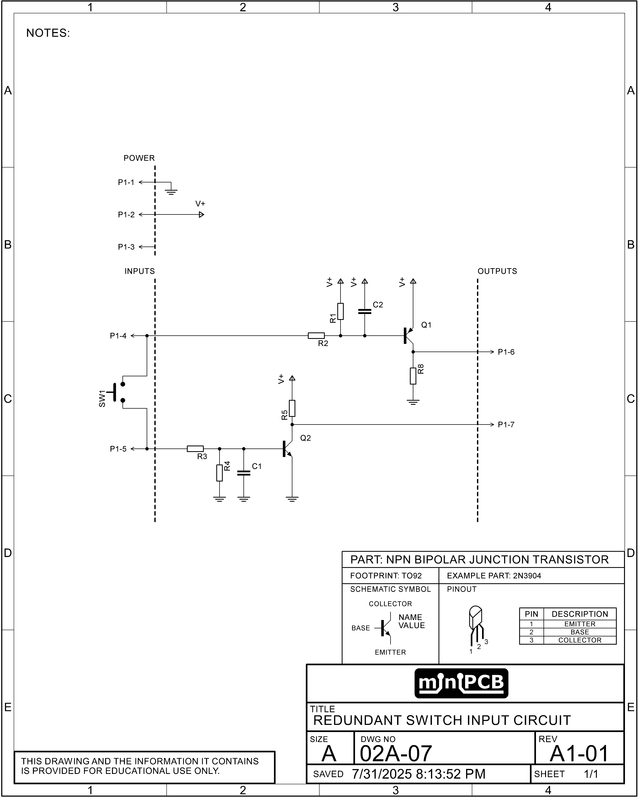
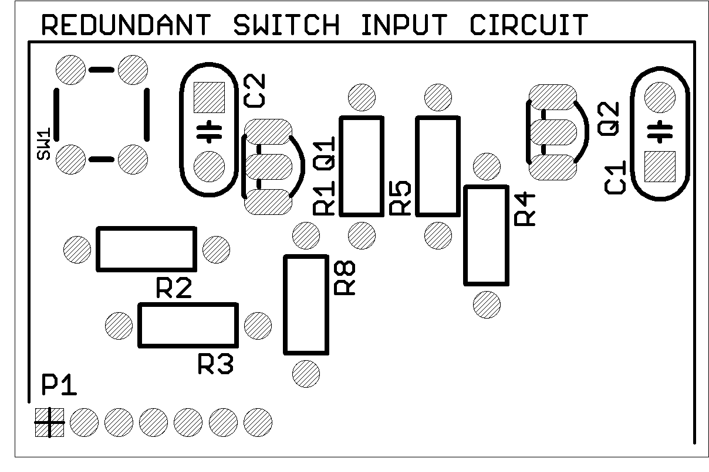

PCB Details
Part No: 02A-07
Title: Redundant Switch Input Circuit
Board Size: Approx. 50 x 33 mm
Pieces per Panel: 6
Panel Size: 100 x 100 mm (V-scored)
Schematic

Board Layout
Redundant Switch Input – Circuit Description
Two independent NPN stages (Q1 and Q2) read a single switch (SW1) and drive two separate outputs. Either channel can be checked by downstream logic; disagreement flags a fault, improving safety and diagnostics.
- Power (P1-1…P1-3): V+ supply and ground for both channels.
- Inputs (P1-4, P1-5): Separate lines from SW1 feed each channel.
- Channel A – Q1 → Output P1-6: R2 limits base current; C2 filters noise/switch bounce. SW1 closure forward-biases Q1 and pulls P1-6 low.
- Channel B – Q2 → Output P1-7: R3 limits base current; R4 || C1 filter; R5 provides pull-up bias. SW1 closure drives Q2 and pulls P1-7 low.
- Outputs: P1-6 and P1-7 are independent, open-collector–like transistor pulls to ground (use external pull-ups as required).
Design notes: Separate bias/filter networks reduce common-mode failures. Capacitors tame bounce; resistors set safe base currents and default states.
Example Parts List
| Ref Des | Value / Part No. | Rationale |
|---|---|---|
| Q1 | 2N3906 PNP BJT | General-purpose PNP transistor for high-side switching; turns on when base is pulled low relative to emitter. |
| Q2 | 2N3904 NPN BJT | General-purpose NPN transistor for low-side switching; turns on when base is driven high relative to emitter. |
| R2 | 10 kΩ | Limits base current into Q1 and sets bias for proper operation. |
| R3 | 10 kΩ | Limits base current into Q2 to safe levels. |
| R4 | 100 kΩ | Provides high-value bias for Q2’s base; forms an RC filter with C1 for noise suppression. |
| R5 | 10 kΩ | Pull-up to V+ for Q2 base, preventing false triggering when the switch is open. |
| C1 | 100 nF | Works with R4 to filter out switch bounce and high-frequency interference for Q2’s channel. |
| C2 | 100 nF | Filters switch bounce and noise for Q1’s channel. |
| SW1 | Momentary Pushbutton | Primary mechanical input; its contacts independently feed the two transistor channels. |
| P1 | 7-pin header | Provides power, independent inputs, and dual redundant outputs for external connection. |